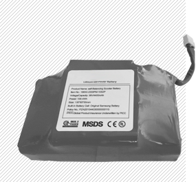
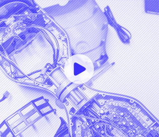
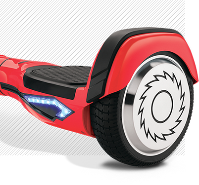

Cветодиодные индикаторы сообщают
окружающим о запланированном
повороте. Своим мерцанием они
мгновенно реагируют на смещение
центра тяжести в правую или левую
сторону.
Как только ваше движение продолжится по прямой, мерцание прекратится,
подсветка снова станет в виде сплошной линии.
Имеет съемную аккумуляторную
батарею. Это позволяет легко вытащить сам АКБ и, к примеру, перевезти
весь гироборд в самолёте – это кстати
единственный гироскутер, с которым
проходит такой «трюк», да и есть
документы, подтверждающие лицензию на его производство и использование.
25км
2ч
Запас хода
Время зарядки

Электроника
При эксплуатации Rizor Hovertrax
4.0 нельзя не отметить плавность
торможения и быстроту набора
скорости.
В копилку «плюсов» нужно отнести
и безупречную отзывчивость
электронной начинки.
Бесшумный двигатель
Встроенный гироскоп


Характеристики
Rizor hovertrax 4.0
Корпус
Выполнен из прочного пластика, и имеет
приятную LED подсветку, дополняющую
общий дизайн. Платформы для ног покрыты
антискользящим покрытием.
Колеса
Rizor Hovertrax 4.0 получил
относительно небольшие,
но, в целом, среднего диаметра
колёса в 6,5 дюймов.
Мощность
Двигателя в 350 Вт обеспечивает
комфортное и безопасное передвижение
при максимальной скорости
в 13 км/ч.
Вес
Небольшой вес, приблизительно
в 12 кг, позволяет относительно
компактно переносить гироборд
с собой.
4.0 Rizor
Для кого
При максимально выдерживаемой
нагрузке в 100 кг отлично подойдёт,
как для подрастающего поколения,
так и для более взрослых «наездников».
Это единственный гироскутер со
специальным детским режимом
езды.